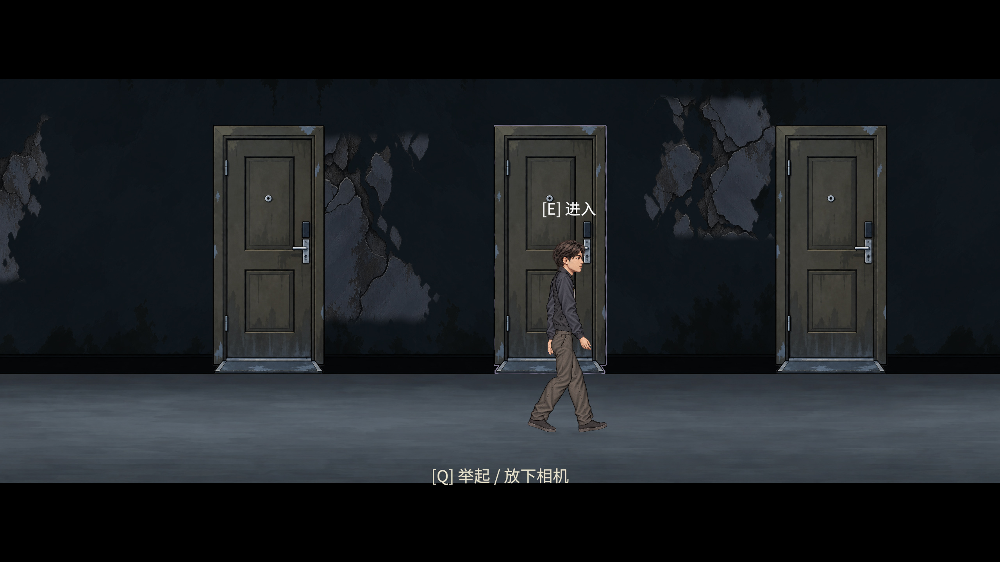
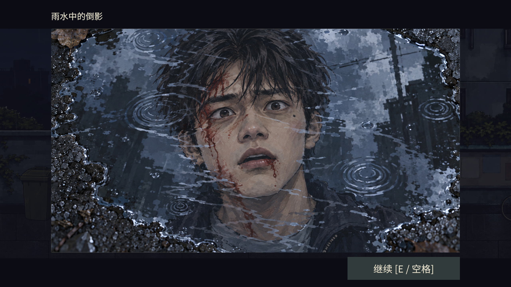
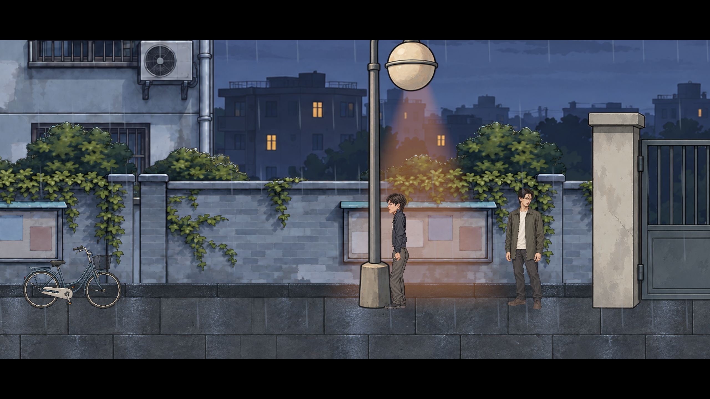
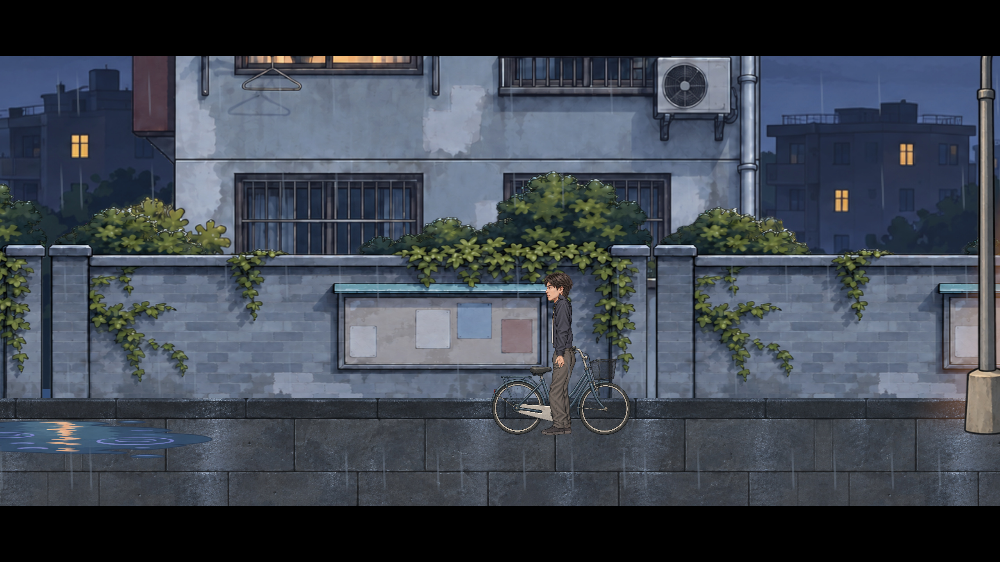
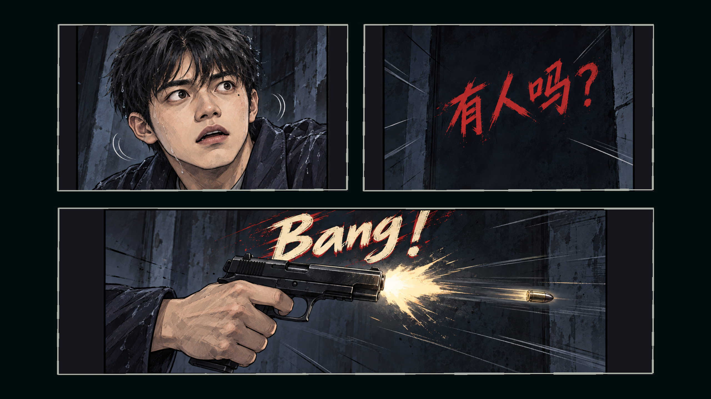
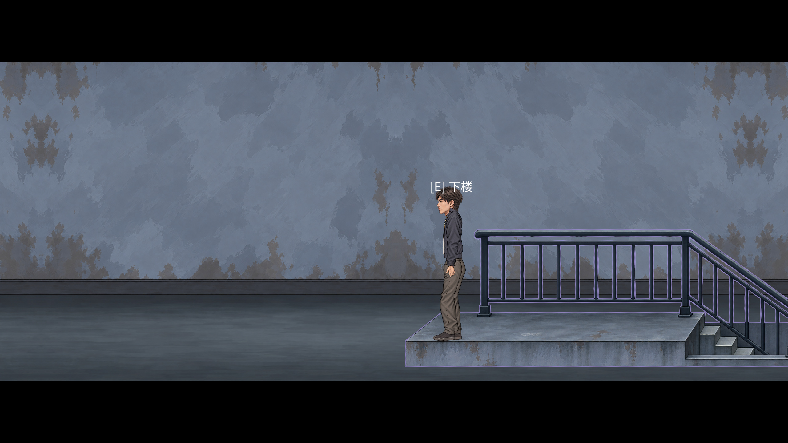
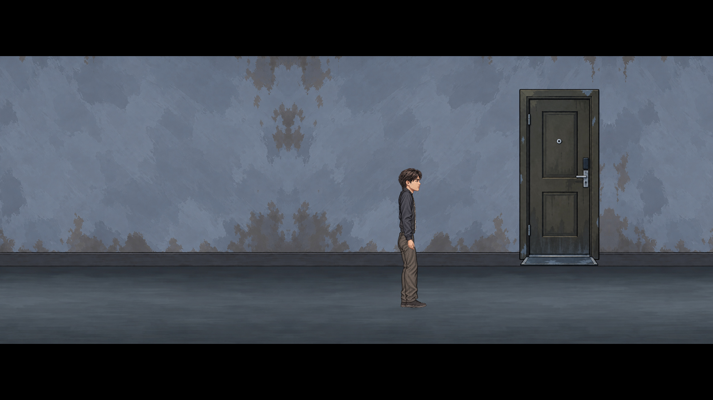
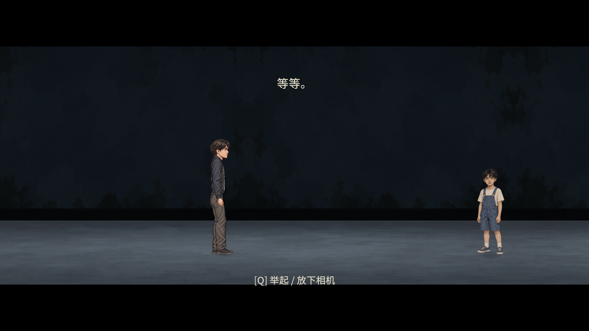

PROJECT MYSTERY · P03 · 2026-10-04
雨夜与家属院：阶段审核
本轮实现和内部回归完成，待你审查画面与体验。200项运行检查通过，14项编辑态检查通过，开发构建0错误 / 488警告。P03尚未提交。
保留原人物动作、物品获取与剧情门槛。两灯连续异化走廊是反馈文档明确要求。全Demo延续要求按后续章节落实，本页没有把其他章节审计当成全局通过。
开局自动右移已修复（2026-10-04）：旧手柄轴已与键盘移动分开；两次无回放、前台未暂停的启动观察均保持原地。
原生输入复测。原画面素材与剧情不变。
三门位于同一画幅

最终实际运行：三门同框；原右、左、中答案保留。修改前后
记者群
楼梯与环境尺度
主卧灯影同框
次卧窗、桌与书柜
三门距离与走廊
锁体原生像素与输入
照片原剧情状态前后
三段最终短录像
1440×810，累计约40秒，不保留逐帧图片档。只用于对应片段的画面和流程复核，未编码音轨；游戏原有交互/吉他音没有被关闭。
雨夜：真实移动触发漫画，三格顺序和原剧情黑幕家属院：窗内动态雨与照片台面连续二楼：两灯经过、崩坏、回走、隔离读档和三门测试逐项修改与复测
M01 · 记者与证件套
补群体与场景专用轻微待机；扁平证件套落地，保留原阻挡及拾取
问题与具体证据
原问题：原记者只有一人，证件套像方块且悬空
复测：reporter crowd blocks passage; credential retains original pickup; cannot leave a duplicate ground image
M01 最终运行画面M02 · 水坑血脸近景
制作慌乱血脸水坑；按原比例显示，进入与退出清理错误倒影
问题与具体证据
原问题：旧近景为矩形街景，退出后有残留黑色倒影
复测：puddle first close clears old portrait; repeat puddle uses original dialogue only

M02 最终运行画面M03 · 路灯光源
三个灯具使用实际灯泡位置的独立发光锚点
问题与具体证据
原问题：灯锥锚点与绘制灯泡不一致
复测：three lamp cones terminate exactly at bulb emitters

M03 最终运行画面M04 · 自行车落地
换为等比例平行道路的自行车，双轮接同一地面
问题与具体证据
原问题：斜向图与侧向道路不相容
复测：grounding screenshot, source aspect and edit geometry

M04 最终运行画面M05 · 枪声漫画
三格新表情、有人吗？、开枪手、飞弹和Bang；原枪声与推进回调保留
问题与具体证据
原问题：旧表情反复复用、缺文字和开枪动作
复测：05/06/07 ordered composed screenshots; native video decodes

M05 最终运行画面M06 · 住宅门和动态雨
门贴墙脚，双向黑幕落地；五扇家属院窗增加逐玻璃裁切的动态雨
问题与具体证据
原问题：门槛落在通行带，窗雨为静态贴画
复测：doors original fade/destination/no landing drop; five windows / fifteen panes

M06 最终运行画面M07 · 污渍全家福与桌面支撑
生日/拍照既有状态显影；家属院与童年已查实的灯/相机落入真正台面；建立全Demo审计
问题与具体证据
原问题：照片提前清晰，灯和相机悬在桌缘
复测：stained/clean state; tabletop support; return living room enter/exit
M07 最终运行画面跨章状态：全Demo延续条款仍跟随P04/P05/P06逐章处理与P08全流程验收，不标记为全局完成
M08 · 楼梯尺度
完整楼梯高度1.6世界单位，成人1.8；保留原上下楼交互
问题与具体证据
原问题：旧五阶结构在近镜头下高过成人
复测：stairs 1.6 < adult 1.8; stairs up/down/up no landing drop
M08 最终运行画面M09 · 庭院黑雾与活动范围
庭院横向布局统一压缩到原0.6；同步NPC/热点/地面/边界/旧档；黑雾与阻挡相邻
问题与具体证据
原问题：邱天右侧空路长、空气墙无视觉依据
复测：layout/save migration, crowd/fog blocker, supported original door transitions

M09 最终运行画面跨章状态：全Demo延续条款仍跟随P04/P05/P06逐章处理与P08全流程验收，不标记为全局完成
M10 · 主卧影灯演出
小桌支撑灯，残破父母影子同框；原接近触发与离场规则保留
问题与具体证据
原问题：灯和父母影子隔得太远，无法同时看见
复测：original approach clears parent event and restores lamp
M10 最终运行画面M11 · 次卧和密码桌近景
窗桌书柜重排；新密码桌与电脑/抽屉手绘轮廓热点；原生锁体与四轮输入；清除三张旧CU_HOME资源
问题与具体证据
原问题：窗与书柜重叠，桌无密码抽屉，仍用旧近景
复测：rendered contour/raycast; scroll/drag; birthday gate; duplicate prevention; native pixel budget
M11 最终运行画面M12 · 连续异化二楼
次卧退出后接连贯异化二楼，停用楼梯/白块与旧远程背景；D/A实走，不增加中途切场
问题与具体证据
原问题：白块触发远处传送，回到旧楼梯且画面闪切
复测：bedroom exit is distorted second floor without remote teleport; old stairs disappear

M12 最终运行画面M13 · 两灯崩坏与三门同框
两处经过灯推动单向递增崩坏；三门距离压缩并统一取景；存读恢复阶段和原右左中答案
问题与具体证据
原问题：长廊冗长，无崩坏阶段，三门互不可见
复测：real crossing stage1/2; pause freeze; cold restore; wrong choice reset; E sequence2/0/1
M13 最终运行画面通过范围与尚未完成项
本轮通过：编辑态结构/素材引用、200项编辑器运行回归、隔离存读、原输入回放、UI事件命中、开发验证构建。独立程序完整新游戏通关、用户人工审美、GitHub归档未在本轮执行。
全Demo审计已覆盖五个构建场景；童年地面/前景和学校空间/旧条带等仍按P04/P05处理，结尾运行画面待P06/P08。报告保留这些未关闭条款。
200项运行记录 · 编辑态检查 · 构建结果 · P02保留校验 · 13项问题闭环 · 同版文件哈希